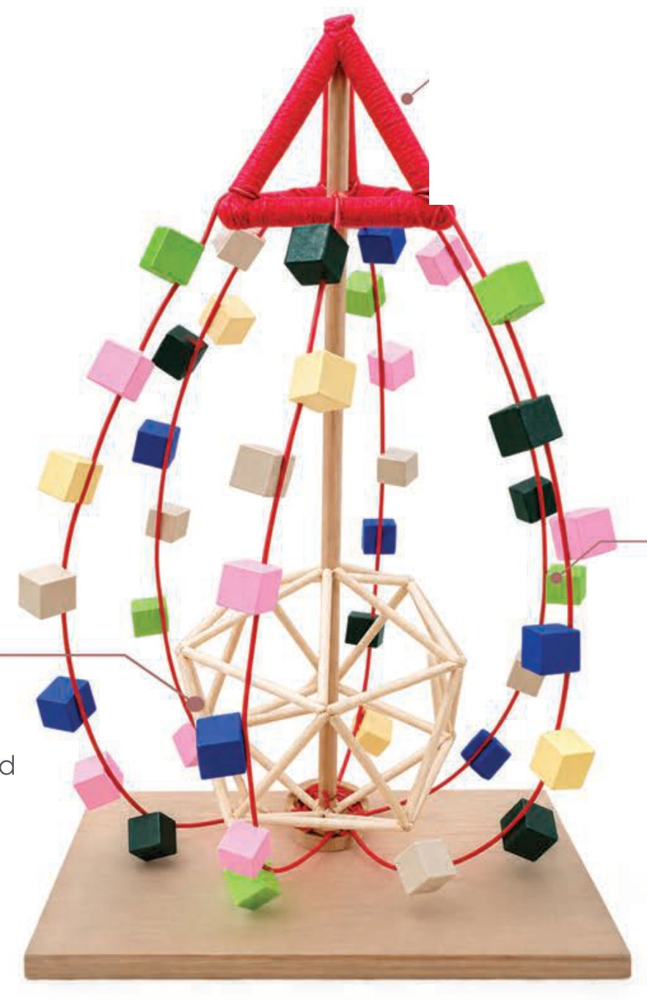
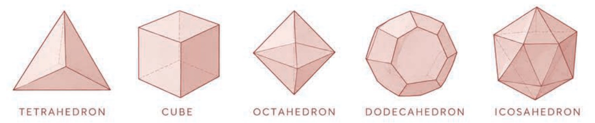
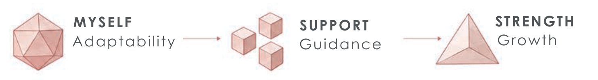
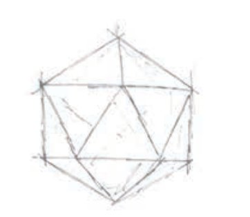
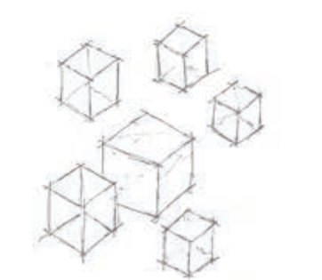
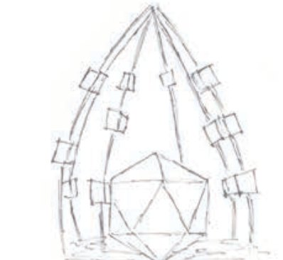
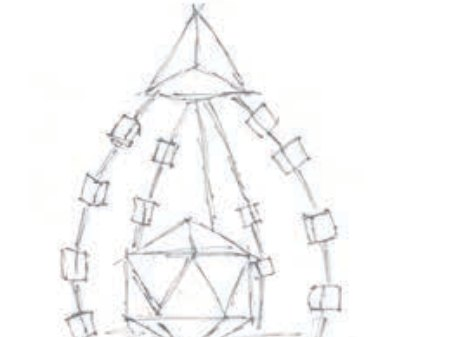
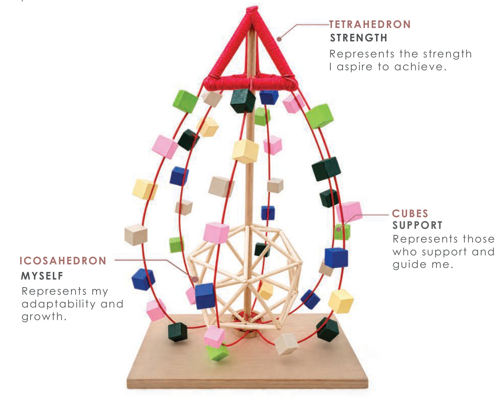

Drop of
Success
Conceptual study · Physical model
Drop of Success explores personal growth through Platonic solids. Three forms represent myself, the people who support my journey, and the strength I aspire to achieve.
Explore project
ConceptDevelopment
From Platonic solids to a personal journey
The project began by exploring Platonic solids and their symbolic relationship to natural elements. Three forms were selected and given personal meanings to develop the concept “A Journey”.

Represents my adaptability and growth throughout the journey.
Represents the people who support and guide me.
Represents the strength and confidence I aspire to achieve.

DesignProcess
Translating the narrative into form
“A Journey” represents my personal growth. The icosahedron represents myself and adaptability, the cubes represent the people who support me, and the tetrahedron represents the strength I aspire to achieve. Together, the forms express my journey towards growth and confidence.
Starting point

The journey begins with the icosahedron, representing myself.
Support

Cubes are introduced to represent support throughout the journey.
Growth

The form develops upward, expressing growth towards the goal.
Final composition

The tetrahedron completes the journey, representing strength.

FinalDesign
Physical model
The central icosahedron is the adaptable self. Cubes rise around it along the curved frame as the people who support and guide, and the tetrahedron crowns the composition as the strength aspired to.
The final composition expresses a journey from adaptability and support towards strength and growth.